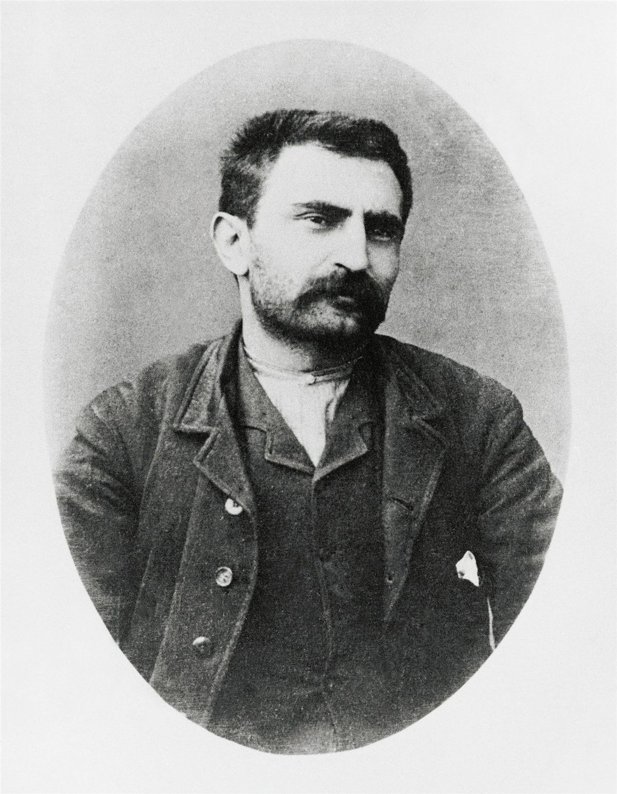

Contexte
Errico Malatesta (1853-1932) est l'une des grandes figures de l'anarchisme italien et international. Électricien de métier, il passe sa vie entre l'action, la prison et l'exil : Londres, l'Argentine, l'Égypte. Il meurt en 1932 à Rome, surveillé jour et nuit par la police de Mussolini.

Il écrit L'Anarchie en italien, à Londres, en 1891. La brochure est rééditée et traduite des dizaines de fois, en français notamment au début du XXe siècle. Elle s'adresse à un public populaire et répond à deux adversaires : les socialistes qui veulent conquérir l'État, et les libéraux qui défendent la liberté sans toucher à la propriété. Malatesta veut aussi réhabiliter un mot devenu synonyme de chaos.
La thèse
L'anarchie, c'est-à-dire la société sans gouvernement, est possible, souhaitable et prévisible. Elle suppose la fin de la propriété privée et de toute domination. La solidarité est la loi naturelle de la vie humaine ; le gouvernement n'en est pas la condition, mais l'obstacle.
Les idées, dans l'ordre
- Les mots. Si « anarchie » veut dire désordre dans la langue courante, c'est à cause d'un préjugé : la croyance qu'un gouvernement est indispensable. Malatesta préfère parler d'« abolition du gouvernement », plus concret qu'« abolition de l'État ».
- Qu'est-ce qu'un gouvernement ? Un groupe de personnes qui font les lois et disposent de la force de tous pour les imposer. Il ne tombe pas du ciel : il sort de la société, et sert d'abord à protéger celles et ceux qui possèdent.
- Le suffrage universel n'y change rien. Il donne seulement l'illusion que le peuple se gouverne lui-même.
- L'homme aux jambes liées. Malatesta imagine un homme qui a toujours marché entravé et qui finit par croire que ses liens le tiennent debout. Ainsi des peuples qui pensent ne pas pouvoir vivre sans maîtres.
- La coopération, moteur de l'histoire. Plus que la lutte de tous contre tous, c'est l'entraide qui a fait progresser l'humanité. Sociétés savantes, secours mutuels, coopératives, syndicats montrent que l'association volontaire marche déjà.
- Et la défense, la justice, les services publics ? Le peuple armé se défend mieux qu'une armée de métier ; les conflits se règlent par arbitrage ; la coutume pèse plus que les codes. Les rares personnes dangereuses relèvent du soin et de la protection, pas de la vengeance.
- Pas de plan tout fait. L'anarchie n'est pas un modèle à appliquer, c'est une méthode : libre initiative, libre accord, expérimentation. Administrer les choses en commun, oui ; gouverner les personnes, non.
Débats et limites
- Un texte optimiste, écrit à une époque où beaucoup croyaient la révolution proche. Malatesta lui-même, plus tard, insistera sur le temps long, la nécessité de s'organiser et de gagner la majorité des gens.
- « Prévisible » ? Le XXe siècle a vu grandir les États bien plus que la liberté. Le texte garde sa force comme argument, moins comme prédiction.
- La question de l'organisation, à peine abordée ici, sera au cœur de ses textes ultérieurs : lire Anarchie et organisation.
Et aujourd'hui ?
Les objections auxquelles répond Malatesta sont toujours celles qu'on entend : « et qui ramassera les poubelles ? », « et les violents ? », « c'est utopique ». Ses réponses servent encore à expliquer simplement l'anarchisme. Les réseaux d'entraide nés pendant les crises (cantines, collectes, maraudes, assemblées de quartier) illustrent sa thèse : l'organisation sans chefs existe déjà.
À retenir
- Le gouvernement n'est pas la condition de l'ordre social : il en vit.
- Les obstacles (habitudes, misère, ignorance) sont réels, mais ne justifient pas de garder des maîtres.
- L'anarchie est une méthode, pas un plan.
- Un des textes d'introduction les plus clairs à l'anarchisme. À lire avec Au café.
Le texte complet est sur Mamie Commune. Lire en ligne ou ouvrir le PDF.
Sources et pour aller plus loin
Le texte original
- Le texte complet sur Mamie Commune, à lire en ligne ou en PDF.
- « L'Anarchie » sur la Bibliothèque anarchiste : le texte intégral, aussi en PDF et en livre numérique (EPUB).
Lire
- Articles politiques, Errico Malatesta, textes choisis et traduits par Israël Renof, 10/18, 1979.Le meilleur moyen de suivre sa pensée sur cinquante ans.
- Ni Dieu ni maître. Anthologie de l'anarchisme, Daniel Guérin, La Découverte.Malatesta parmi les autres grandes voix.
- Au café et Anarchie et organisationNos fiches sur deux autres textes majeurs de Malatesta.
Sur le web
- Errico Malatesta sur WikipédiaUne vie d'insurrections, d'exils et de prisons.
- Le communisme libertaireLe courant auquel il appartient.
- CIRA de LausanneCentre international de recherches sur l'anarchisme : bibliothèque, archives, fiches biographiques.
Fiche de lecture rédigée par la bande à Mamie d'après les textes de la Bibliothèque anarchiste francophone. Cette fiche est libre de reproduction.
À lire aussi · État & pouvoir
- Les Lois scélérates de 1893-1894Trois lois d'exception votées contre les anarchistes punissent des opinions et des conversations : un précédent contre toute opposition.
- Le Bétail patriotiqueLa caserne ne défend pas la nation : elle broie la volonté pour fabriquer des sujets dociles, puis des électeurs obéissants.
- Les Anarchistes : ce qu'ils sont, ce qu'ils ne sont pasNi rêveurs inoffensifs ni brutes : les anarchistes combattent ensemble l'État, la propriété et la religion.